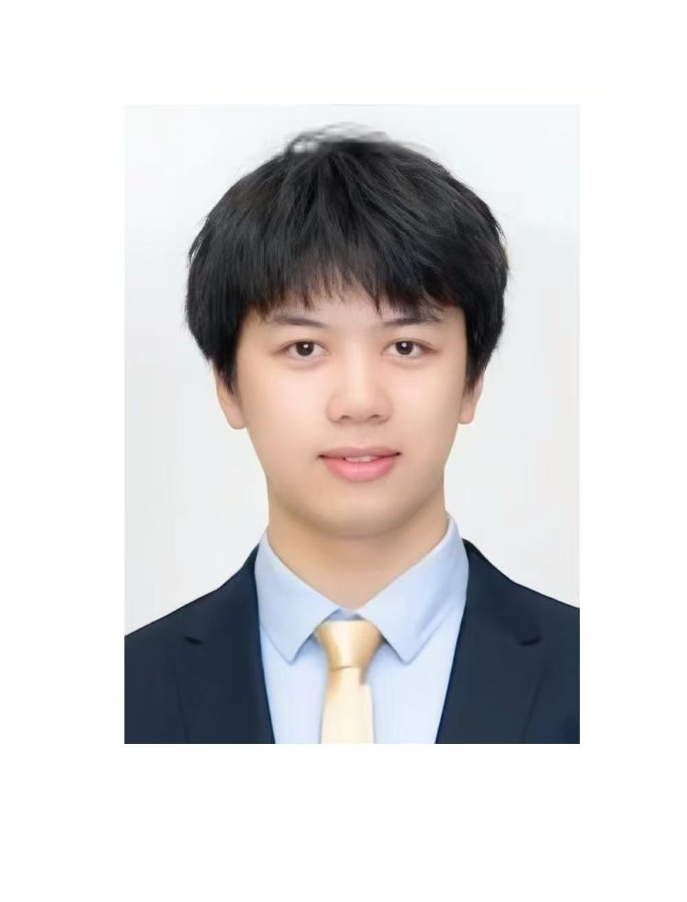

Current Stage
Final-year Student
Computer Science
Final-year Computer Science Student
I am a final-year Computer Science student at the University of Macau, with strong interests in artificial intelligence, large language models, and practical intelligent systems. My academic journey has been shaped by both research exploration and hands-on project development, especially in areas related to efficient and privacy-aware AI.
Through this portfolio, I hope to present my educational background, research interests, technical skills, and professional potential to graduate schools, instructors, and future employers.



Current Stage
Computer Science
Institution
B.Sc. Programme
Focus
Research-oriented and deployable applications
Get To Know More

Research Projects
Web Programming and AI Development

B.Sc. Computer Science
University of Macau
At the same time, my experience in web programming, technical projects, and internship-related work has strengthened my ability to turn ideas into clear, usable, and well-structured solutions. This page provides a concise summary of my academic background, interests, and strengths. It is designed for graduate schools, course instructors, and potential employers who want a quick but clear understanding of my professional direction and portfolio identity.
Profile Page
I believe that meaningful learning comes from both discipline and curiosity. In my academic journey, I value careful thinking, consistent improvement, and the ability to connect theory with practice. I do not see Computer Science as only learning how to code; I see it as learning how to solve problems in a structured, responsible, and thoughtful way.
I believe technical work should be both useful and well communicated. Through my experience in web programming, research assistance, and system-related work, I have learned that technical ability alone is not enough. Clear documentation, responsible collaboration, and professional presentation are equally important in turning ideas into real and valuable outcomes.
One of my major aspirations is to pursue advanced study in Computer Science and continue developing in research-oriented environments. I am particularly interested in artificial intelligence, large language models, efficient intelligent systems, and privacy-aware AI. I hope to strengthen my research skills and deepen my understanding of how intelligent systems can be made more practical, efficient, and deployable.
In the long term, I hope to contribute to the design and development of useful digital systems, especially those related to intelligent applications and deployable AI. I want to work in roles where I can combine research thinking, technical development, and clear communication to produce systems that are academically meaningful and practically valuable.
Outside formal coursework, I enjoy exploring topics related to AI, large language models, efficient model design, and system-oriented implementation. I also like refining webpages, portfolio structures, and technical presentations, because I find satisfaction in making ideas more organized, readable, and visually clear.
I enjoy reflecting on personal growth, planning future goals, and improving my work through iteration. I also appreciate activities that help me stay balanced and thoughtful, including reading, observing good design, and continuously improving the way I present myself academically and professionally.
Explore My
Conducted scientific research on multi-LLM agent inference cooperation, LLM multi-agent fine-tuning cooperation, and lightweight deployment through pruning-oriented exploration.
Conducted scientific research in fine-tuning cooperation and the localization of large language models, with a focus on practical research implementation.
Conducted system maintenance and development work, strengthening my practical understanding of structured technical support and system-oriented implementation.
Explore My
 PythonExperiencedPyTorchIntermediateLLM ResearchIntermediateModel EfficiencyIntermediatePrivacy-aware AIIntermediateResearch WritingExperiencedHTMLExperiencedCSSExperiencedJavaScriptIntermediateRIntermediateC / C++IntermediateGit and GitHubExperienced
PythonExperiencedPyTorchIntermediateLLM ResearchIntermediateModel EfficiencyIntermediatePrivacy-aware AIIntermediateResearch WritingExperiencedHTMLExperiencedCSSExperiencedJavaScriptIntermediateRIntermediateC / C++IntermediateGit and GitHubExperiencedSummary and Showcase
My goal is to develop into a well-prepared Computer Science student with strong academic foundations, practical technical ability, and clear research interests. Through my studies and project work, I aim to strengthen my understanding of programming, web development, artificial intelligence, and large language models. I also want to improve my ability to analyze problems carefully, communicate technical ideas clearly, and produce structured, professional-quality work that is suitable for both academic and real-world settings.
In my personal and professional development planning, I focus on continuous growth through coursework, research, internships, and project-based learning. Academically, I plan to deepen my knowledge in AI-related areas, especially efficient and practical intelligent systems. Professionally, I want to keep improving my technical skills in programming, web design, system development, and documentation, so that I can contribute effectively in both graduate study and future technical roles.
Looking back, I have grown through a combination of academic study, research exposure, web programming practice, and technical project experience. These experiences have helped me become more disciplined, reflective, and confident in presenting my ideas. In the future, I hope to continue this development by pursuing advanced study and taking part in more meaningful technical and research projects.
I am particularly interested in efficient and trustworthy AI systems, especially large language models that can be adapted for practical use. I hope to further explore model efficiency, privacy-preserving approaches, and intelligent systems that are both capable and deployable in real-world settings.
My academic goal is to pursue advanced graduate study in Computer Science, where I can strengthen my research foundation and work on meaningful AI problems. I would like to develop deeper expertise in machine learning, large language models, and research-driven system design through a rigorous and collaborative environment.
In the long term, I hope to contribute to the development of deployable AI products and practical intelligent systems. I want to bridge research and implementation by working on solutions that are technically sound, user-oriented, and valuable in real application scenarios.
Showcase Page
As a Computer Science student, I hope to continue developing both my technical foundation and my professional readiness through coursework, projects, and future study. In particular, web programming has helped me understand how design, structure, and usability come together in building clear and meaningful digital products.
Through webpage design, multi-page portfolio development, and technical project practice, I have learned how to organize information, communicate ideas visually, and improve details through repeated refinement. These experiences have strengthened not only my front-end development skills, but also my confidence in presenting work in a professional and user-friendly way.
In the future, I hope to continue improving my programming ability, broaden my technical experience, and build systems that are practical, well-structured, and thoughtfully designed.
Through building this portfolio and revising multiple pages, I learned to refine webpage structure more carefully. I became more aware of how navigation, section order, spacing, and visual grouping affect the way users understand information. This process helped me improve both my HTML organization and my overall sense of page design.
I also learned that effective web programming is not only about making a page work, but also about presenting information clearly and professionally. Revising content, links, buttons, and layout helped me better understand how technical details support user experience.
This assignment showed me the value of iterative improvement. By testing, revising, and validating different pages, I became more confident in identifying problems, making corrections, and building a more complete multi-page website.
Profile Page
In developing this portfolio, I learned that a professional website is not only about design, but also about how clearly it communicates a person’s identity, achievements, and direction. Through multiple iterations, I became more aware of how layout, wording, and structure shape first impressions.
My research-related experience taught me the importance of patience, precision, and structured thinking. It also showed me that meaningful technical work often requires repeated refinement, careful reading, and collaboration with others before an idea becomes mature and useful.
Web programming, system work, and project-based tasks have helped me understand that learning becomes much stronger when theory is combined with implementation. Building pages, debugging structures, and refining details allowed me to develop both technical skill and confidence in my own work.
Awards and Honors
2024
2024
June, 2024
February, 2024
2023
2023
2023
2023
June, 2023
February, 2023
Qualification Page
University of Macau
B.Sc. in Computer Science
2022 - Present
I am currently a final-year Computer Science student at the University of Macau. My studies have focused on programming, artificial intelligence, web development, and research-oriented technical exploration.
My academic interests include artificial intelligence, large language models, efficient and privacy-aware AI systems, and practical intelligent applications.
Macau Foundation Scholarship
Academic year 2023/2024
Henry Fok Foundation Scholarship
Academic year 2022/2023
Dean’s Honor List
Multiple semesters across academic years 2022/2023 - 2024/2025
Whole Person Development Awards
Golden Award (2022/2023), Bronze Award (2023/2024)
Research Collaboration
Worked with supervisors and research teams on AI-related topics, strengthening collaboration, communication, and technical documentation skills.
Documentation and Presentation
Organized research notes, technical content, and portfolio materials to present information clearly to instructors, reviewers, and professional audiences.
Technical Project Support
Applied programming and web development skills in academic projects, structured coursework, and portfolio-based technical presentation.
Research-Oriented Problem Solving
I can contribute careful analysis, structured experimentation, and research-oriented thinking in AI and computer science projects.
Web Programming and Technical Development
I can support front-end development, structured webpage design, and technical implementation for portfolio and project systems.
Professional Communication
I can help communicate technical ideas clearly through writing, presentation, documentation, and organized project reporting.
Browse My Recent

Original preview retained from the individual assignment portfolio.

Original preview retained from the individual assignment portfolio.
Get in Touch